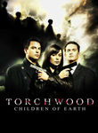

Torchwood

Stephen Klancher: October 13, 2013 
Torchwood takes some of the same enemies of The Doctor and makes them scarier with more gruesome consequences. The relative size of the threat is bigger when there is no Time Lord to fix everything. And where he would save as many people as possible and then leave, this series stays with the wounded, broken survivors. Dr Who is more fun overall, but it's very interesting to see this series live in the same universe and accomplish an entirely different pace and feeling.
Stephen Klancher: October 20, 2013
"The right kind of doctor..." SO exciting to hear the tardis engine at the end!
Stephen Klancher: October 28, 2013
Ok now that both of the fucked up gloves are gone, they can't kill any more main characters. Except it's a scifi show, so they totally can.

Stephen Klancher: January 12, 2014
Horrifying things happen when people can no longer die. Are they "alive" as ash? Reminds me of one of the Doom books where an alien's "soul" was trapped for thousands of years. Being "alive" in that sense drove it deeply insane.